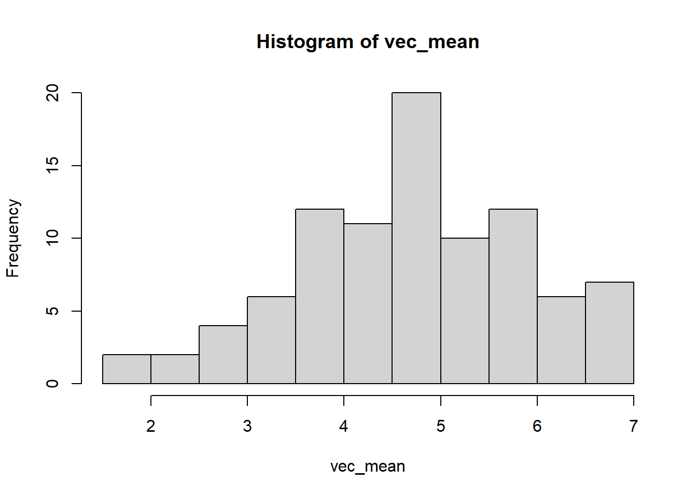
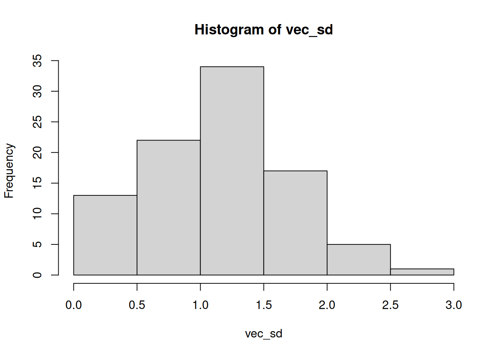
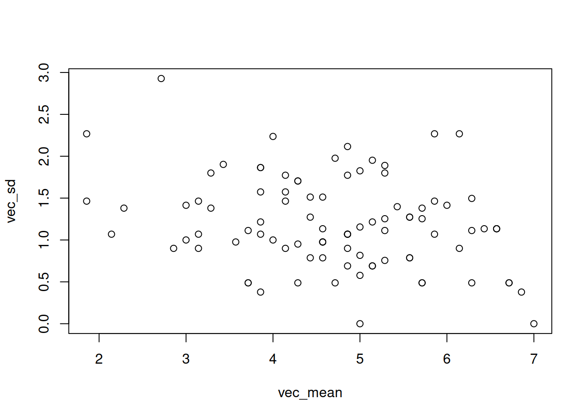

## global variablesClean, prepare and transform data
Background Information
This is an R Markdown document. Instructions for writing these documents and background information can be found in the book written by Xie, Allaire, and Grolemund (2018) When you execute code within the document, the results appear beneath the code. This file contains the pre-processing step (clean, prepare and transform data). File are split into multiple subfiles like data processing and data analyses steps, which follows the classical data-analysis pipeline (see Peng and Matsui 2016; Wickham and Grolemund 2017).
Notes
Global variables to control output:
get packages, raw data, functions
### install and load packages
# if packages are not already installed, the function will install and activate them
usePackage <- function(p) {
if (!is.element(p, installed.packages()[,1]))
install.packages(p, dep = TRUE, repos = "http://cran.us.r-project.org")
require(p, character.only = TRUE)
}
usePackage("readxl") # read .xlsx files
usePackage("writexl") # write .xlsx files
usePackage("tidyverse") # data cleaning and summarizing
usePackage("jsonlite") # json files
## outputs
usePackage("stargazer") # create tables
usePackage("DT") # create dynmaic tables
usePackage("report") # get reports of statistical tests in APA7
rm(usePackage)
### load data files
## change working directory
setwd("data")
## load JATOS data
read_file('jatos_results_20221003075820.txt') %>%
# ... split it into lines ...
str_split('\n') %>% first() %>%
# ... filter empty rows ...
discard(function(x) x == '') %>%
# ... parse JSON into a data.frame
map_dfr(fromJSON, flatten=TRUE) -> dat
## load ESTA data, to match probes, questions:
esta <- readxl::read_excel(path = "items ESTA readable.xlsx", sheet = 1)
esta <- esta[nchar(esta$probe) > 0 & !is.na(esta$probe), ]
esta$scale <- str_replace_all(esta$scale, "[^[:alnum:]]", "")
esta$left <- str_replace_all(esta$left, "[^[:alnum:]]", " ")
esta$left <- str_trim(string = esta$left)
esta$right <- str_replace_all(esta$right, "[^[:alnum:]]", " ")
esta$right <- str_trim(string = esta$right)
esta$probe <- str_replace_all(esta$probe, "[^[:alnum:]|</|>|\\?]", " ")
esta$probe <- str_trim(string = esta$probe)
### load functions
setwd("../functions")
for(i in 1:length(dir())){
# print(dir()[i])
source(dir()[i], encoding = "utf-8")
}
rm(i)data preperation
add ID variable:
sum(!is.na(dat$url.srid))[1] 0sum(dat$sender_id == "0", na.rm = TRUE)[1] 115### ID variable dat 1
dat$ID <- NA
tmp_IDcounter <- 0
for(i in 1:nrow(dat)){
if(!is.na(dat$sender[i]) && dat$sender[i] == "Greetings"){
# tmp <- dat$prolific_pid[i]
tmp_IDcounter = tmp_IDcounter + 1
}
dat$ID[i] <- tmp_IDcounter
}
rm(i); rm(tmp_IDcounter)
table(dat$ID); length(unique(dat$ID))
1 2 3 4 5 6 7 8 9 10 11 12 13 14 15 16 17 18 19 20
57 57 57 57 57 57 57 57 57 2 57 57 57 57 57 57 57 57 57 57
21 22 23 24 25 26 27 28 29 30 31 32 33 34 35 36 37 38 39 40
57 57 57 30 57 57 57 2 57 57 57 2 57 2 9 2 57 2 2 57
41 42 43 44 45 46 47 48 49 50 51 52 53 54 55 56 57 58 59 60
57 57 57 9 57 57 9 57 57 57 57 57 57 57 2 57 57 57 9 57
61 62 63 64 65 66 67 68 69 70 71 72 73 74 75 76 77 78 79 80
57 9 57 57 2 57 30 57 57 57 57 9 57 57 57 57 57 57 57 9
81 82 83 84 85 86 87 88 89 90 91 92 93 94 95 96 97 98 99 100
57 57 57 57 57 57 57 57 57 57 57 2 57 57 30 2 9 57 57 57
101 102 103 104 105 106 107 108 109 110 111 112 113 114 115
57 57 57 57 57 57 57 57 57 57 57 57 30 57 57 [1] 115sum(table(dat$ID) == max(table(dat$ID)))[1] 92glimpse(dat)Rows: 5,458
Columns: 81
$ para_defocuscount <list> [<data.frame[1 x 2]>], <NULL>, <NULL>, <NULL>…
$ sender <chr> "Greetings", "InformedConsent", "InformedConse…
$ sender_type <chr> "html.Form", "html.Form", "html.Form", "html.F…
$ sender_id <chr> "0", "1", "2", "3", "4", "5", "6", "7", "8", "…
$ ...5 <chr> "", "", NA, "", "", "", NA, "", "", "", "", ""…
$ ended_on <chr> "form submission", "form submission", "skipped…
$ duration <dbl> 76742.18, 17238.46, NA, 11691.05, 19954.23, 16…
$ time_run <dbl> 2654.2, 79667.3, 96912.6, 96912.8, 108608.3, 1…
$ time_render <dbl> 2907.523, 79652.833, NA, 96900.075, 108592.839…
$ time_show <dbl> 2924.222, 79669.541, NA, 96916.750, 108609.571…
$ time_end <dbl> 79666.4, 96908.0, 96908.0, 108607.8, 128563.8,…
$ time_commit <dbl> 79666.8, 96908.2, 96912.7, 108608.0, 128564.1,…
$ timestamp <chr> "2022-10-01T15:05:24.663Z", "2022-10-01T15:05:…
$ time_switch <dbl> 79669.54, 96916.75, 96916.75, 108609.57, 12857…
$ PROLIFIC_PID <chr> NA, "6119d21fe73ebd5e62616b0f", NA, NA, NA, NA…
$ dummy_informedconsent <chr> NA, "1", NA, NA, NA, NA, NA, NA, NA, NA, NA, N…
$ R1 <chr> NA, NA, NA, NA, NA, NA, "green", NA, NA, NA, N…
$ R2 <chr> NA, NA, NA, NA, NA, NA, "eco-friendly", NA, NA…
$ R3 <chr> NA, NA, NA, NA, NA, NA, "landscape", NA, NA, N…
$ R4 <chr> NA, NA, NA, NA, NA, NA, "weather data", NA, NA…
$ R5 <chr> NA, NA, NA, NA, NA, NA, "construction", NA, NA…
$ para_countclicks <int> NA, NA, NA, NA, NA, NA, NA, 0, NA, NA, NA, NA,…
$ `affImgAffect-R5` <chr> NA, NA, NA, NA, NA, NA, NA, "6", NA, NA, NA, N…
$ `affImgAffect-R1` <chr> NA, NA, NA, NA, NA, NA, NA, "7", NA, NA, NA, N…
$ `affImgAffect-R4` <chr> NA, NA, NA, NA, NA, NA, NA, "3", NA, NA, NA, N…
$ `affImgAffect-R3` <chr> NA, NA, NA, NA, NA, NA, NA, "7", NA, NA, NA, N…
$ `affImgAffect-R2` <chr> NA, NA, NA, NA, NA, NA, NA, "7", NA, NA, NA, N…
$ knowSRM <chr> NA, NA, NA, NA, NA, NA, NA, NA, "knowSRMno", N…
$ knowSRMdefinition <chr> NA, NA, NA, NA, NA, NA, NA, NA, "", NA, NA, NA…
$ index_ESTA <list> <NULL>, <NULL>, <NULL>, <NULL>, <NULL>, <NULL…
$ notneeded <int> NA, NA, NA, NA, NA, NA, NA, NA, NA, NA, NA, 0,…
$ counter <int> NA, NA, NA, NA, NA, NA, NA, NA, NA, NA, NA, 0,…
$ hedonism01 <chr> NA, NA, NA, NA, NA, NA, NA, NA, NA, NA, NA, "4…
$ p_item <chr> NA, NA, NA, NA, NA, NA, NA, NA, NA, NA, NA, NA…
$ category_probe <chr> NA, NA, NA, NA, NA, NA, NA, NA, NA, NA, NA, NA…
$ comp_probe <chr> NA, NA, NA, NA, NA, NA, NA, NA, NA, NA, NA, NA…
$ hedonism03 <chr> NA, NA, NA, NA, NA, NA, NA, NA, NA, NA, NA, NA…
$ contractualist02 <chr> NA, NA, NA, NA, NA, NA, NA, NA, NA, NA, NA, NA…
$ deontology02 <chr> NA, NA, NA, NA, NA, NA, NA, NA, NA, NA, NA, NA…
$ deontology03 <chr> NA, NA, NA, NA, NA, NA, NA, NA, NA, NA, NA, NA…
$ contractualist06 <chr> NA, NA, NA, NA, NA, NA, NA, NA, NA, NA, NA, NA…
$ hedonism08 <chr> NA, NA, NA, NA, NA, NA, NA, NA, NA, NA, NA, NA…
$ feedback_critic <chr> NA, NA, NA, NA, NA, NA, NA, NA, NA, NA, NA, NA…
$ meta.labjs_version <chr> "20.2.4", NA, NA, NA, NA, NA, NA, NA, NA, NA, …
$ meta.location <chr> "https://studien.psychologie.uni-freiburg.de/p…
$ meta.userAgent <chr> "Mozilla/5.0 (Windows NT 10.0; Win64; x64) App…
$ meta.platform <chr> "Win32", NA, NA, NA, NA, NA, NA, NA, NA, NA, N…
$ meta.language <chr> "en-US", NA, NA, NA, NA, NA, NA, NA, NA, NA, N…
$ meta.locale <chr> "en-US", NA, NA, NA, NA, NA, NA, NA, NA, NA, N…
$ meta.timeZone <chr> "America/New_York", NA, NA, NA, NA, NA, NA, NA…
$ meta.timezoneOffset <int> 240, NA, NA, NA, NA, NA, NA, NA, NA, NA, NA, N…
$ meta.screen_width <int> 1920, NA, NA, NA, NA, NA, NA, NA, NA, NA, NA, …
$ meta.screen_height <int> 1200, NA, NA, NA, NA, NA, NA, NA, NA, NA, NA, …
$ meta.scroll_width <int> 1920, NA, NA, NA, NA, NA, NA, NA, NA, NA, NA, …
$ meta.scroll_height <int> 179, NA, NA, NA, NA, NA, NA, NA, NA, NA, NA, N…
$ meta.window_innerWidth <int> 1920, NA, NA, NA, NA, NA, NA, NA, NA, NA, NA, …
$ meta.window_innerHeight <int> 1057, NA, NA, NA, NA, NA, NA, NA, NA, NA, NA, …
$ meta.devicePixelRatio <dbl> 1, NA, NA, NA, NA, NA, NA, NA, NA, NA, NA, NA,…
$ meta.labjs_build.flavor <chr> "production", NA, NA, NA, NA, NA, NA, NA, NA, …
$ meta.labjs_build.commit <chr> "f5b4a49f956347addd546a832a3327688c2c0fef", NA…
$ ...4 <chr> NA, NA, NA, NA, NA, NA, NA, NA, NA, NA, NA, NA…
$ deontology04 <chr> NA, NA, NA, NA, NA, NA, NA, NA, NA, NA, NA, NA…
$ contractualist01 <chr> NA, NA, NA, NA, NA, NA, NA, NA, NA, NA, NA, NA…
$ hedonism07 <chr> NA, NA, NA, NA, NA, NA, NA, NA, NA, NA, NA, NA…
$ utilitarian01 <chr> NA, NA, NA, NA, NA, NA, NA, NA, NA, NA, NA, NA…
$ deontology01 <chr> NA, NA, NA, NA, NA, NA, NA, NA, NA, NA, NA, NA…
$ virtue01 <chr> NA, NA, NA, NA, NA, NA, NA, NA, NA, NA, NA, NA…
$ comp_probe_again <chr> NA, NA, NA, NA, NA, NA, NA, NA, NA, NA, NA, NA…
$ contractualist03 <chr> NA, NA, NA, NA, NA, NA, NA, NA, NA, NA, NA, NA…
$ category_probe_again <chr> NA, NA, NA, NA, NA, NA, NA, NA, NA, NA, NA, NA…
$ virtue09 <chr> NA, NA, NA, NA, NA, NA, NA, NA, NA, NA, NA, NA…
$ deontology08 <chr> NA, NA, NA, NA, NA, NA, NA, NA, NA, NA, NA, NA…
$ deontology05 <chr> NA, NA, NA, NA, NA, NA, NA, NA, NA, NA, NA, NA…
$ deontology07 <chr> NA, NA, NA, NA, NA, NA, NA, NA, NA, NA, NA, NA…
$ deontology09 <chr> NA, NA, NA, NA, NA, NA, NA, NA, NA, NA, NA, NA…
$ hedonism02 <chr> NA, NA, NA, NA, NA, NA, NA, NA, NA, NA, NA, NA…
$ p_code <int> NA, NA, NA, NA, NA, NA, NA, NA, NA, NA, NA, NA…
$ p_ask_content <chr> NA, NA, NA, NA, NA, NA, NA, NA, NA, NA, NA, NA…
$ contractualist04 <chr> NA, NA, NA, NA, NA, NA, NA, NA, NA, NA, NA, NA…
$ ...37 <chr> NA, NA, NA, NA, NA, NA, NA, NA, NA, NA, NA, NA…
$ ID <dbl> 1, 1, 1, 1, 1, 1, 1, 1, 1, 1, 1, 1, 1, 1, 1, 1…# dat[is.na(dat$sender),] # pseudo data?
## keep only full datasets
dat <- dat[dat$ID %in% names(table(dat$ID))[table(dat$ID) == max(table(dat$ID))],]save feedback as Excel file:
setwd("output")
varsSingExcel <- "feedback_critic"
tmp <- data.frame(ID = dat[, "ID"][!is.na(dat[, varsSingExcel]) & dat[, varsSingExcel] != ""],
feedback = dat[, varsSingExcel][!is.na(dat[, varsSingExcel]) & dat[, varsSingExcel] != ""])
writexl::write_xlsx(x = tmp,
path = paste0(varsSingExcel, ".xlsx"))
write_rds(x = tmp, file = paste0(varsSingExcel, ".rds"))
varsSingExcel <- c("knowSRM", "knowSRMdefinition")
tmp <- data.frame(ID = dat[, "ID"][!is.na(dat[, varsSingExcel])],
knowSRM = dat[, varsSingExcel[1]][!is.na(dat[, varsSingExcel][1])],
knowSRMdefinition = dat[, varsSingExcel[2]][!is.na(dat[, varsSingExcel][2])])
writexl::write_xlsx(x = tmp,
path = paste0("knowSRM", ".xlsx"))
write_rds(x = tmp, file = paste0("knowSRM", ".rds"))set up questionnaire:
setwd("output")
colnames(dat) [1] "para_defocuscount" "sender"
[3] "sender_type" "sender_id"
[5] "...5" "ended_on"
[7] "duration" "time_run"
[9] "time_render" "time_show"
[11] "time_end" "time_commit"
[13] "timestamp" "time_switch"
[15] "PROLIFIC_PID" "dummy_informedconsent"
[17] "R1" "R2"
[19] "R3" "R4"
[21] "R5" "para_countclicks"
[23] "affImgAffect-R5" "affImgAffect-R1"
[25] "affImgAffect-R4" "affImgAffect-R3"
[27] "affImgAffect-R2" "knowSRM"
[29] "knowSRMdefinition" "index_ESTA"
[31] "notneeded" "counter"
[33] "hedonism01" "p_item"
[35] "category_probe" "comp_probe"
[37] "hedonism03" "contractualist02"
[39] "deontology02" "deontology03"
[41] "contractualist06" "hedonism08"
[43] "feedback_critic" "meta.labjs_version"
[45] "meta.location" "meta.userAgent"
[47] "meta.platform" "meta.language"
[49] "meta.locale" "meta.timeZone"
[51] "meta.timezoneOffset" "meta.screen_width"
[53] "meta.screen_height" "meta.scroll_width"
[55] "meta.scroll_height" "meta.window_innerWidth"
[57] "meta.window_innerHeight" "meta.devicePixelRatio"
[59] "meta.labjs_build.flavor" "meta.labjs_build.commit"
[61] "...4" "deontology04"
[63] "contractualist01" "hedonism07"
[65] "utilitarian01" "deontology01"
[67] "virtue01" "comp_probe_again"
[69] "contractualist03" "category_probe_again"
[71] "virtue09" "deontology08"
[73] "deontology05" "deontology07"
[75] "deontology09" "hedonism02"
[77] "p_code" "p_ask_content"
[79] "contractualist04" "...37"
[81] "ID" # treat "index_ESTA" special
ques_mixed <- c("PROLIFIC_PID",
"dummy_informedconsent",
str_subset(string = colnames(dat), pattern = "^R"),
str_subset(string = colnames(dat), pattern = "^affImg"),
"knowSRM", "knowSRMdefinition",
"index_ESTA", "feedback_critic")
vec_notNumeric = c("PROLIFIC_PID", str_subset(string = colnames(dat), pattern = "^R"),
"knowSRM", "knowSRMdefinition", "feedback_critic")
questionnaire <- questionnairetype(dataset = dat, listvars = ques_mixed)[1] 1
[1] "PROLIFIC_PID"
[1] 2
[1] "dummy_informedconsent"
[1] 3
[1] "R1"
[1] 4
[1] "R2"
[1] 5
[1] "R3"
[1] 6
[1] "R4"
[1] 7
[1] "R5"
[1] 8
[1] "affImgAffect-R5"
[1] 9
[1] "affImgAffect-R1"
[1] 10
[1] "affImgAffect-R4"
[1] 11
[1] "affImgAffect-R3"
[1] 12
[1] "affImgAffect-R2"
[1] 13
[1] "knowSRM"
[1] 14
[1] "knowSRMdefinition"
[1] 15
[1] "index_ESTA"
[1] 16
[1] "feedback_critic"head(questionnaire) ID PROLIFIC_PID dummy_informedconsent R1
1 1 6119d21fe73ebd5e62616b0f 1 green
2 2 5a6f1ccade1f390001dbd8b7 1 weather
3 3 61647caff869db29c54fde2b 1 weather
4 4 62d6c2cd1416387d1e7d691a 1 Impact
5 5 60bb4ce0772c798d3242a78a 1 Natural research
6 6 5f1338a87447d0308e865fd0 1
R2 R3 R4 R5
1 eco-friendly landscape weather data construction
2 science
3 human interaction less cars better air quality using less gas
4 Risk Solar Radiation Water
5 Protect climate change spray theory
6
affImgAffect-R5 affImgAffect-R1 affImgAffect-R4 affImgAffect-R3
1 6 7 3 7
2 NA 4 NA NA
3 6 5 6 6
4 7 6 1 7
5 NA 7 NA 7
6 NA NA NA NA
affImgAffect-R2 knowSRM
1 7 knowSRMno
2 7 knowSRMno
3 5 knowSRMno
4 4 knowSRMlittle
5 7 knowSRMlittle
6 NA knowSRMno
knowSRMdefinition
1
2
3
4 It is a type of climate engineering in which sunlight is reflected into space.
5 It is a kind of climate engineering which reflected back to space to limit man made climate change.
6
index_ESTA
1 5 - 7 - 1 - 12 - 13 - 4 - 9 - 16 - 20 - 10 - 18 - 8 - 11 - 14 - 19 - 17 - 0 - 15 - 3 - 6 - 2
2 14 - 0 - 8 - 10 - 12 - 11 - 4 - 2 - 13 - 19 - 20 - 16 - 6 - 15 - 18 - 5 - 17 - 1 - 7 - 9 - 3
3 19 - 2 - 10 - 13 - 11 - 20 - 7 - 1 - 9 - 0 - 16 - 17 - 8 - 5 - 3 - 14 - 18 - 15 - 4 - 6 - 12
4 20 - 19 - 17 - 1 - 0 - 13 - 14 - 12 - 7 - 9 - 15 - 4 - 3 - 5 - 2 - 10 - 6 - 18 - 8 - 16 - 11
5 15 - 12 - 16 - 17 - 0 - 20 - 18 - 14 - 5 - 8 - 7 - 19 - 6 - 10 - 9 - 2 - 13 - 3 - 11 - 1 - 4
6 6 - 15 - 2 - 4 - 20 - 11 - 13 - 3 - 9 - 18 - 10 - 19 - 14 - 12 - 0 - 8 - 16 - 5 - 1 - 17 - 7
feedback_critic
1 No feedback other than I think the autonomy question and freedom question are very similar. I didn't mind anything. Cool study!
2 No, I enjoyed it.
3 Great study! I enjoyed it
4 No comment.
5 Thank you for that kind of important study.
6 These questions were repetitive and not easy.dim(questionnaire)[1] 92 17### save
writexl::write_xlsx(x = questionnaire,
path = paste0("questionnaire", ".xlsx"))
write_rds(x = questionnaire, file = paste0("questionnaire", ".rds"))loop over probes:
function:
# dataset = dat_loop
loopType <- function(dataset, estadat){
vars_sorted <- sort(unique(dat_loop$p_item))
dat_out <- data.frame(ID = NA, item = NA,
questionItem = NA,
value = NA,
category_probe = NA, category_probe_again = NA,
questionComprehension = NA,
comp_probe = NA, comp_probe_again = NA)
checkRound = 1
for(i in unique(dat_loop$ID)){
tmp_dat_person <- dat_loop[dat_loop$ID == i,c("ID", "p_item", vars_sorted,
"category_probe", "category_probe_again",
"comp_probe", "comp_probe_again"
)]
for(v in unique(tmp_dat_person$p_item)){
tmp_dat <- tmp_dat_person[tmp_dat_person$p_item == v,c("ID", "p_item", v,
"category_probe", "category_probe_again",
"comp_probe", "comp_probe_again")]
tmp_estadat <- estadat[estadat$scale == v,]
## NA if value is missing
tmp_category_probe_again <- tmp_dat[,"category_probe_again"][!is.na(tmp_dat[, "category_probe_again"])]
if(identical(tmp_category_probe_again, character(0))){
tmp_category_probe_again <- NA
}
tmp_comp_probe_again <- tmp_dat[,"comp_probe_again"][!is.na(tmp_dat[, "comp_probe_again"])]
if(identical(tmp_comp_probe_again, character(0))){
tmp_comp_probe_again <- NA
}
tmp_dat_out <- c(i,
unique(tmp_dat[,"p_item"][!is.na(tmp_dat[, "p_item"])]),
paste0(c(tmp_estadat$left, tmp_estadat$right), collapse = "..."),
tmp_dat[,v][!is.na(tmp_dat[, v])],
tmp_dat[,"category_probe"][!is.na(tmp_dat[, "category_probe"])],
tmp_category_probe_again,
tmp_estadat$probe,
tmp_dat[,"comp_probe"][!is.na(tmp_dat[, "comp_probe"])],
tmp_comp_probe_again)
if(checkRound == 1){
dat_out[checkRound,] <- tmp_dat_out
}else{
dat_out <- rbind(dat_out, tmp_dat_out)
}
checkRound = checkRound + 1
}
}
return(dat_out)
}setwd("output")
dat_loop <- dat
dat_loop <- dat_loop[!is.na(dat_loop$counter),]
for(i in 1:nrow(dat_loop)){
if(!is.na(dat_loop$p_item[i])){
## fill up item i-1
dat_loop$p_item[i-1] <- dat_loop$p_item[i]
}
}
for(i in 1:nrow(dat_loop)){
if(!is.na(dat_loop$p_item[i])){
## fill up missing items
tmp <- dat_loop$p_item[i]
}else{
dat_loop$p_item[i] <- tmp
}
}
# dat_loop$p_item
table(dat_loop$p_item)
contractualist01 contractualist02 contractualist03 contractualist04
180 144 198 138
contractualist06 deontology01 deontology02 deontology03
192 198 198 180
deontology04 deontology05 deontology07 deontology08
192 174 192 228
deontology09 hedonism01 hedonism02 hedonism03
174 240 144 180
hedonism07 hedonism08 utilitarian01 virtue01
192 192 168 150
virtue09
210 loop <- loopType(dataset = dat_loop, estadat = esta)
### save
writexl::write_xlsx(x = loop, path = paste0("loop", ".xlsx"))
write.csv2(x = loop, file = paste0("loop", ".csv"))
write_rds(x = loop, file = paste0("loop", ".rds"))some descriptives:
for persons:
loop$ID <- as.numeric(loop$ID)
loop$value <- as.numeric(loop$value)
DT::datatable(data = loop)vec_id <- c()
vec_mean <- c()
vec_sd <- c()
counter = 1
for(i in unique(loop$ID)){
tmp <- loop$value[loop$ID == i]
vec_id[counter] <- i
vec_mean[counter] <- mean(tmp)
vec_sd[counter] <- sd(tmp)
counter = counter + 1
}
hist(vec_mean); summary(vec_mean)
Min. 1st Qu. Median Mean 3rd Qu. Max.
1.857 3.857 4.857 4.713 5.571 7.000 hist(vec_sd); summary(vec_sd)
Min. 1st Qu. Median Mean 3rd Qu. Max.
0.0000 0.8789 1.1339 1.1964 1.5000 2.9277 plot(vec_mean, vec_sd)
vec_id[vec_sd > 2][1] 17 19 68 88 94 110DT::datatable(data = loop[loop$ID %in% vec_id[vec_sd > 2], ])tmp <- loop %>%
group_by(item) %>%
summarise(N = n(), mean = mean(value), SD = sd(value))
DT::datatable(data = tmp)References
Peng, Roger D., and Elizabeth Matsui. 2016. The Art of Data Science: A Guide for Anyone Who Works with Data. Lulu.com. https://bookdown.org/rdpeng/artofdatascience/.
Wickham, Hadley, and Garrett Grolemund. 2017. R for Data Science: Import, Tidy, Transform, Visualize, and Model Data. "O’Reilly Media, Inc.". https://r4ds.had.co.nz/.
Xie, Yihui, J. J. Allaire, and Garrett Grolemund. 2018. R Markdown: The Definitive Guide. New York: Chapman; Hall/CRC. https://doi.org/10.1201/9781138359444.